Ideas · · 18 min read
The Measure of a Man: Honouring Sir Patrick Stewart's Masterclass in Leadership
Sir Patrick Stewart taught me much about being a good leader by being a good person. Compassion, consideration, taking the time to consider. Here are those lessons and a commemoration.
The Measure of a Man: Honouring Sir Patrick Stewart's Masterclass in Leadership
Sir Patrick Stewart, 1940 to 2026
This post has sat in my drafts as part of a series on leadership I'm writing alongside my master's, and the inspiration for the post was Picard. Sir Patrick Stewart died on 28 October 2026, at his home in Los Angeles, aged 86. The news broke on the 29th, and that day (today, as of writing) I decided to finish it immediately. I wanted to talk about him, his impact on me, and how I feel like I've lost a mentor of sorts.
Seize the time... Live now! Make now always the most precious time. Now will never come again.
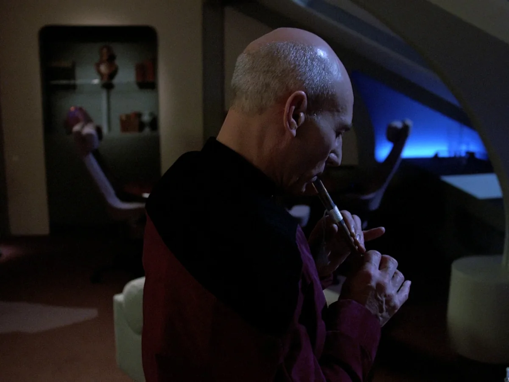
He was born in 1940, grew up in Mirfield in Yorkshire, and was a classically trained stage actor with a career full of Shakespeare, and he could deliver those lines like no other. He played Jean-Luc Picard for seven seasons of Star Trek: The Next Generation, four films and three seasons of Star Trek: Picard, Professor Charles Xavier in the X-Men films, and Captain Ahab in a 1998 television Moby Dick. He was knighted in 2010.
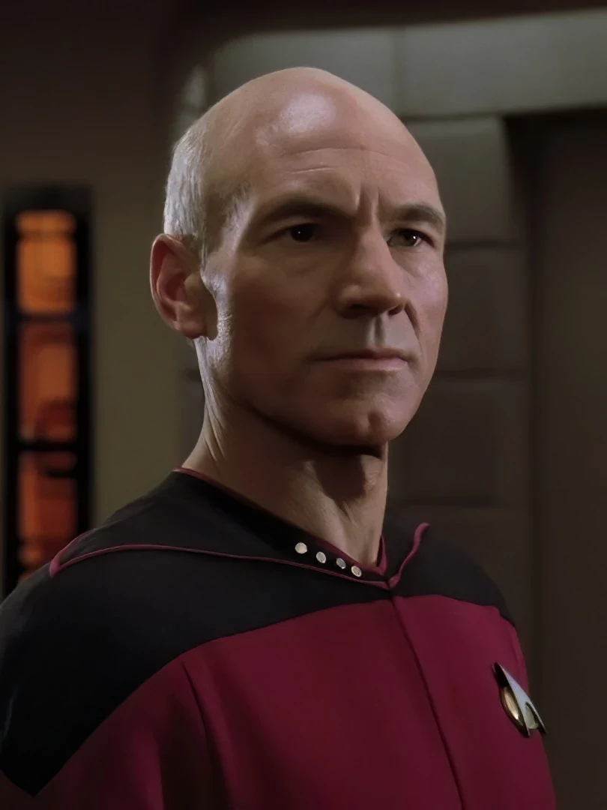
He was also the Emperor, Uriel Septim VII, in The Elder Scrolls IV: Oblivion, a legendary role, and his haunting, powerful and evocative voice set the tone for hundreds of hours of nostalgia for me, there and in everything else he acted in.
His talent and skill as an actor have made me feel most of the emotions on the spectrum over the years, but his portrayal of Jean-Luc Picard, the stoic leader, has always been his finest role, to me. He made that fictional man my role model long before I could actually verbalise why, ever since I first watched Star Trek: The Next Generation at my Nanny's (grandmother's) house. So, after decades of never thinking about how I would feel when Sir Patrick Stewart passed, now I feel a deep sadness. I'm reflecting on the leadership values he portrayed so well: that compassion and putting others first were key, and that leadership is a burden and a responsibility, not something to exploit or to use for personal grandeur. He also made it clear that in leadership, even at "work" (if you can call being a starship captain work), you affect real lives and real people.
On the day the news broke, someone on the TNG subreddit shared an old interview clip of him. In it he talks about the end of a play he did in England, where his character has to say goodbye to his whole life without a line of dialogue. Every night, he looked out into the audience and imagined he was saying goodbye to his six friends from Starfleet.
The rest of this article is the finalised and fleshed-out draft on the leadership I gleaned from his personification of Captain Jean-Luc Picard, where I will think positively on what he brought, rather than the grief I feel at his passing. Rest in peace, Sir Patrick Stewart.
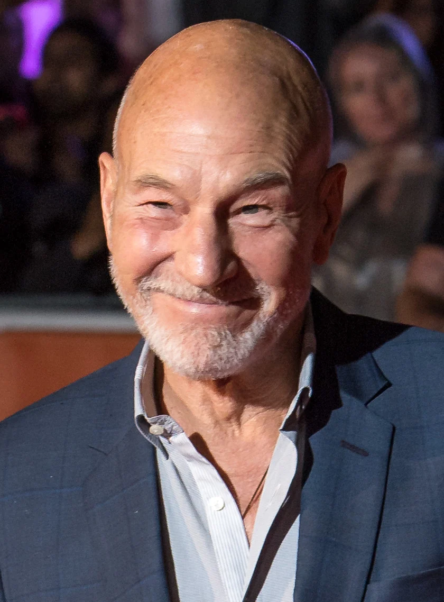
What Picard taught me about leadership
The reading list for my master's in Organizational Leadership is chock-full of examples of leadership, from real organisations with real problems, such as hospitals, car plants, an airline that turned itself around, etc. They're useful and full of salient information, and the case studies are wonderful for consideration and for learning facts from, but they're not all that inspirational. The one that did inspire me is fictional. The leader I have watched most closely is a bald Frenchman with an English accent who is a big fan of 'Tea, Earl Grey, Hot', from the TV show Star Trek: The Next Generation (TNG).
Obviously, TNG is not a course in leadership, it is a television programme, and Jean-Luc Picard has the enormous advantage of never having to give his crew personal improvement plans, lay off individuals due to budget concerns, or consider the difficulty in implementing generative AI into the workforce (though some of these problems definitely echo those he did face!). However, Picard is a man who stoically aims to do the right thing in the harshest of scenarios and puts his crew and ethics first, and the show is willing to let him be wrong, so you can see how he falls into traps and how he learns from them. Let me now share how I, in turn, have learned from him.
Quick jargon guide
- Mission command: the military idea, built on commander's intent, that a leader states the goal and the reason for it, then trusts the people on the ground to work out how. The Prussians called it Auftragstaktik.
- Psychological safety: a shared belief in a team that it is safe to disagree, ask, and admit a mistake without being punished for it.
- Leadership styles: Goleman's six: coercive, authoritative (visionary), affiliative, democratic, pacesetting, coaching. Don't just use one, switch as needed by scenario and situation.
- Situational leadership: the claim that the right amount of direction depends on how ready the person or team is, not on the leader's preference.
- Ethical leadership: the leader as the model everyone copies. What you do, and what you visibly refuse to do, sets the standard more than anything you say.
- Servant leadership: Greenleaf's test: do the people you lead grow, become healthier, freer, more likely to lead themselves?
"Make it so"
Picard rarely tells anyone how to do anything. He listens, asks a question or two, decides, says "make it so" and turns back to his chair (which is a wise leadership strategy and projects a fantastic aura, as the kids would say). Riker, Data, Geordi and Worf work out the how. When there's an away mission Riker leads it, and the show keeps coming back to the first officer refusing to let the captain go himself.
That, in a nutshell, is mission command. Stephen Bungay's The Art of Action traces it to the nineteenth-century Prussian army, which noticed that its plans fell apart on contact with the enemy (don't all plans fall apart once you begin acting upon them? I imagine more so in war). So they tried for clearer intent, rather than better plans: tell people what you want and why, and let them adapt.[1] The US Army still teaches it under that name.[2] It works because the person on the ground knows things you don't - after all, leaders decide the what and why, managers control the how and when, and followers do the work.
It's interesting how uncomfortable Picard is on the rare occasions he ends up on the away team himself, and how often those episodes are about what goes wrong because he's there. A bit like a general picking up arms and heading to the front lines - they may have been trained in it, and once fought like that, but that's not their main skill set or purpose.
"Your thoughts?"
Before any decision of import, Picard often takes the senior staff into a room with a long table and a window full of stars and asks what they think. Worf recommends force, usually, Troi reads the room (in a general, hand-wavy, empathic way), Data often represents pure logic, without emotion, Crusher argues the ethics, and Riker is often the dissenting voice, providing criticism and evaluation.
Amy Edmondson named Riker's role psychological safety in 1999 (well, not Riker's role, but what he was doing in the show).[3] Her early work was on hospital teams. The finding that made her name was that the best teams reported more errors, not fewer, because their members felt safe to say so.[3] The crew on the Enterprise don't always agree, but disagreeing with the captain is encouraged, so the arguments happen in the lounge, before he decides. That doesn't mean they openly rebel in front of the crew, or are derogatory, but that they disagree respectfully, from their expert positions and roles.
One of the best examples I can come up with for this concept is in the episode "I, Borg". For anyone who hasn't seen the show, the Borg are really freaky and creepy villains: a hive mind called the Collective, made of drones that are part flesh and part machine, with no thoughts of their own, travelling the galaxy and forcibly "assimilating" whole species into it. They don't negotiate, they don't take prisoners, and their one line to anyone in their way is "Resistance is futile". The crew rescue a wounded Borg drone. Picard, who was assimilated by the Borg two seasons earlier (in "The Best of Both Worlds") and has never really recovered from it (an excellent plot line exploring PTSD and masculinity, by the way), wants to use the drone as a weapon to destroy the whole Collective. Guinan tells him he's wrong, Crusher tells him he's wrong, and he does not enjoy it. Then he meets the drone, who has started calling himself Hugh (individuality!), and changes his mind in front of everyone.
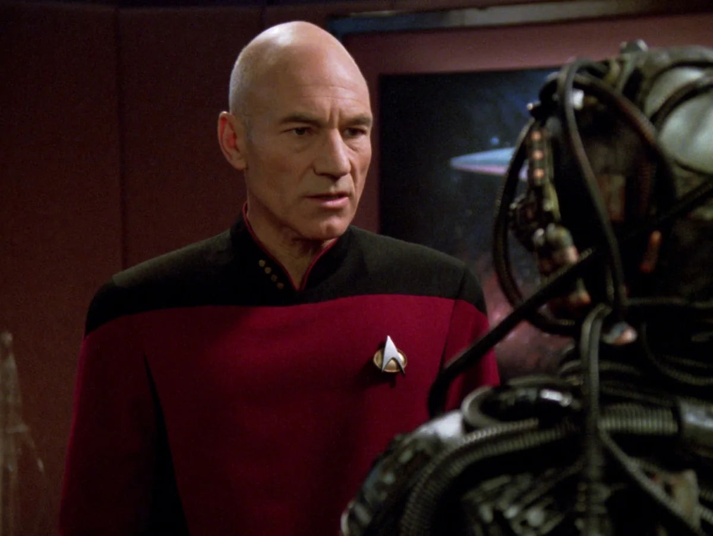
The Jellico problem
In "Chain of Command", Picard is sent on a covert mission and Captain Edward Jellico takes over the Enterprise, and he runs it nothing like Picard does. On day one he moves the ship to a four-shift rotation and tells Troi to wear a standard uniform. He gives orders without asking anyone, and his phrase is "get it done". Within two days he has relieved Riker of duty and the crew despise him.
What makes it a great episode is that Jellico is right.
He reads the Cardassians correctly, wins the standoff without firing a shot and gets Picard back, and the crew are miserable the whole time. Daniel Goleman's 2000 study of leadership styles found that the coercive style, Jellico's, did the most damage to team climate of the six measured in the study. That pure coercive style is necessary in an emergency, when a turnaround has to happen now and there's no time to build consensus, and utterly flawed outside of one.[4] Hersey and Blanchard's situational leadership model holds that how much direction to give depends on how ready the team is, not on what the leader prefers.[5] Picard's way of working suits a crew who have run the drill a hundred times. If he were dropped onto a ship full of strangers on the eve of a war, he would likely have to adopt another leadership style until precedent was established.
Where Jellico goes wrong is making every change at once, on his first day, to a team that was already performing well, without explaining a single one of them. The crew are told and never asked, and reactance surges. I read a number of leadership books before starting my master's, and one of them, The First 90 Days by Michael D. Watkins, describes the importance of a leader becoming a student first: learning the culture, the people, and the standard practice of the teams and projects. Right at the end, Jellico needs the best pilot on the ship for the shuttle mission, and he is forced to go to the man he relieved of duty.
Meanwhile Picard, captured on that covert mission, is being tortured by a Cardassian interrogator, Gul Madred, who wants him to say he sees five lights when there are four. He refuses, right to the end:
There are four lights!
The first duty
In "The First Duty", Wesley Crusher's squadron at the Academy tries a banned flying manoeuvre that kills one of their own. They cover it up, and Wesley goes along with the story at the inquiry. Picard works out what happened, calls him in, and gives him the speech:
The first duty of every Starfleet officer is to the truth.
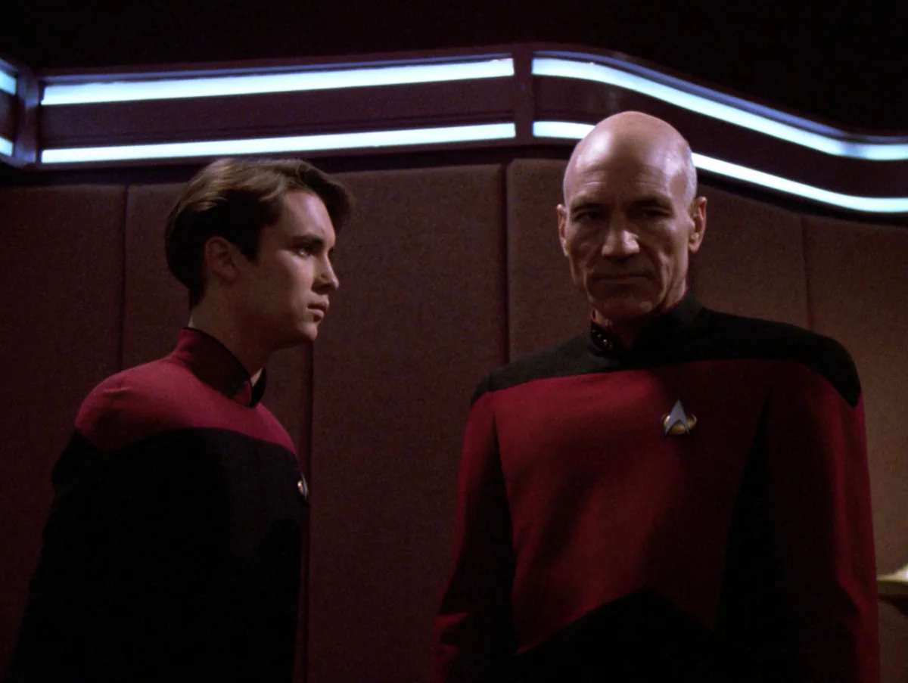
In "The Drumhead", a retired admiral, Norah Satie, comes aboard to investigate an explosion in engineering and turns it into a witch hunt. It starts with a young crewman who hid that his grandfather was Romulan, moves on to anyone who objects, and ends with Picard himself. At the hearing, he quotes her own father, the judge Aaron Satie, back at her, to remind everyone that it always starts small (also one of my favourite quotes of all time):
With the first link, the chain is forged. The first speech censured, the first thought forbidden, the first freedom denied, chains us all irrevocably.
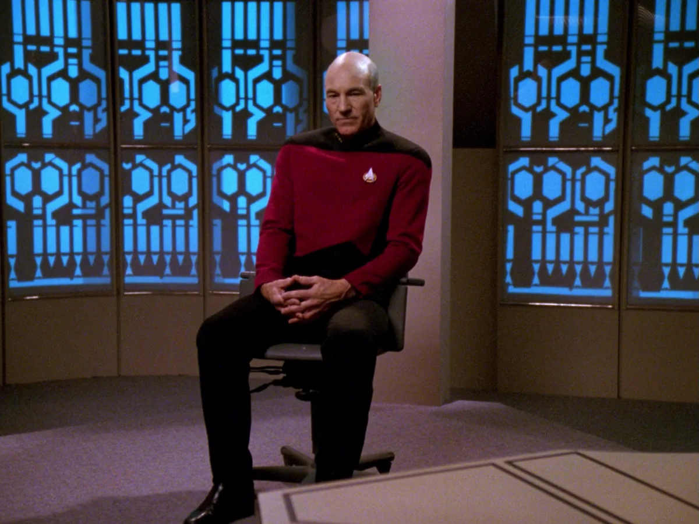
In "The Offspring", Data builds himself a daughter, Lal, and a Starfleet admiral arrives with orders to take her away to be studied. Picard won't hand her over, and when the admiral pushes, he says it to his face:
There are times, sir, when men of good conscience cannot blindly follow orders.
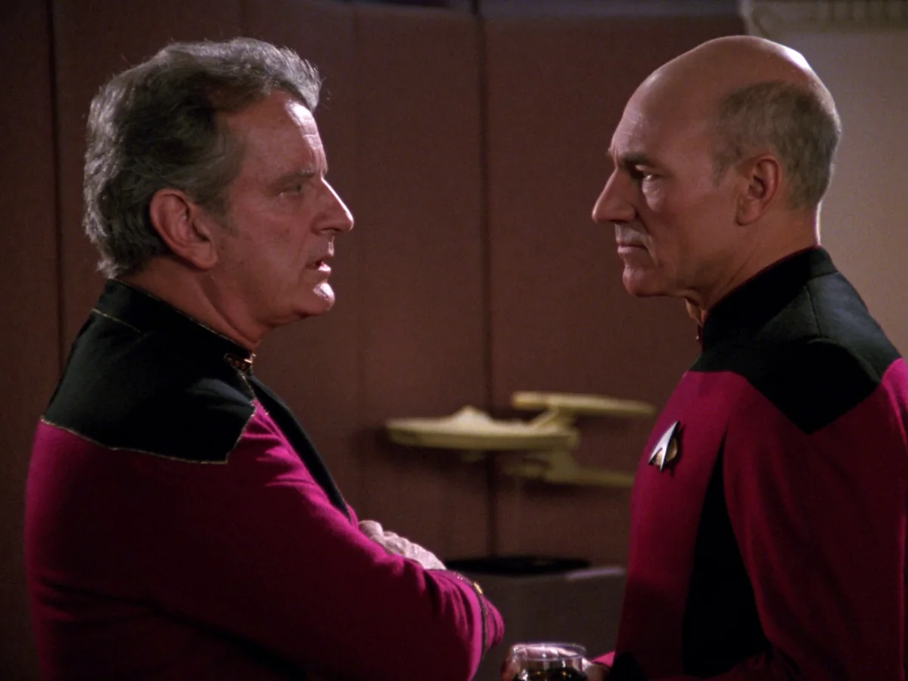
Every one of these is a great example of a tough decision for a leader, and those decisions can cost goodwill, political currency, and possibly even your job. Brown, Treviño and Harrison's work on ethical leadership focuses on issues like these. People copy what the leader visibly does far more than what the leader says, and a leader who tolerates something has, as far as the team can tell, approved it. Leaders are living examples of the philosophy and culture of an organisation, and must embody it directly if they want others to do the same.[6]
The episodes where he fails
As much as I enjoy seeing Picard win, seeing him fail is important too. Good leaders aren't perfect: they make mistakes and learn from them.
Ro Laren. Picard vouches for a disgraced Bajoran ensign nobody else wants (in "Ensign Ro") and gives her a second chance, then a third. In "Preemptive Strike", the last time we see her, she defects to the Maquis, and he's hurt, and shows actual vulnerability, because he was invested in trying to help her, more than was wise. Sometimes we can't let compassion cloud reality, as it may end up hurting us or others more than making a tough decision earlier.
Sito Jaxa. "Lower Decks" (season seven) is told from the junior officers' side. Picard is cold with Ensign Sito on purpose, to see whether she'll stand up for herself, and she does. Then he trusts her with a mission she doesn't come back from, and he makes the announcement to the ship himself.
Ahab. In First Contact, the Borg go back in time to stop humanity's first warp flight, and take over the Enterprise deck by deck. Picard, the one person aboard they have already assimilated once, decides to fight them for the ship instead of evacuating it, out of trauma more than strategy. When he's challenged, he digs in:
The line must be drawn here! This far, no further!
It takes a civilian from the 21st century, Lily Sloane, to say it to his face, with a Melville reference: he's Ahab, and the Borg are his whale. She has no rank and isn't polite, but Picard listens and considers. He recites the passage about Ahab's rage from Moby-Dick himself, then orders everyone off the ship and sets it to self-destruct. (Sir Patrick Stewart went on to play Ahab for real, in the 1998 Moby Dick.)
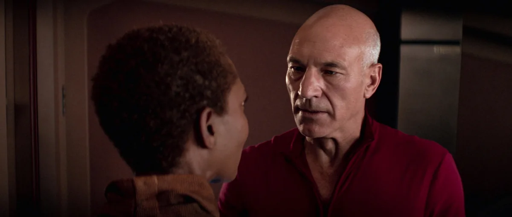
The vineyard. Star Trek: Picard opens fourteen years after he resigned from Starfleet on principle, when it abandoned the Romulan evacuation. Resigning was the right call. What the series shows, through Raffi more than anyone, is what he did next, which was go home and do nothing. The people who had followed him into that fight were left to deal with the consequences on their own. Raffi's anger at him is completely earned.
Risk
In "Tapestry", Picard is dying, and Q offers him the chance to undo the reckless fight in his youth that cost him his heart. He takes it, and wakes up in a life where he never took a risk and never stood out, a junior science officer nobody has noticed in thirty years. He decides he'd rather die as the man he was, strengthened by his foolhardy youth, than as a cautious man who didn't learn the difficult lesson from regret.
But when I pulled on one of those threads it unravelled the tapestry of my life.
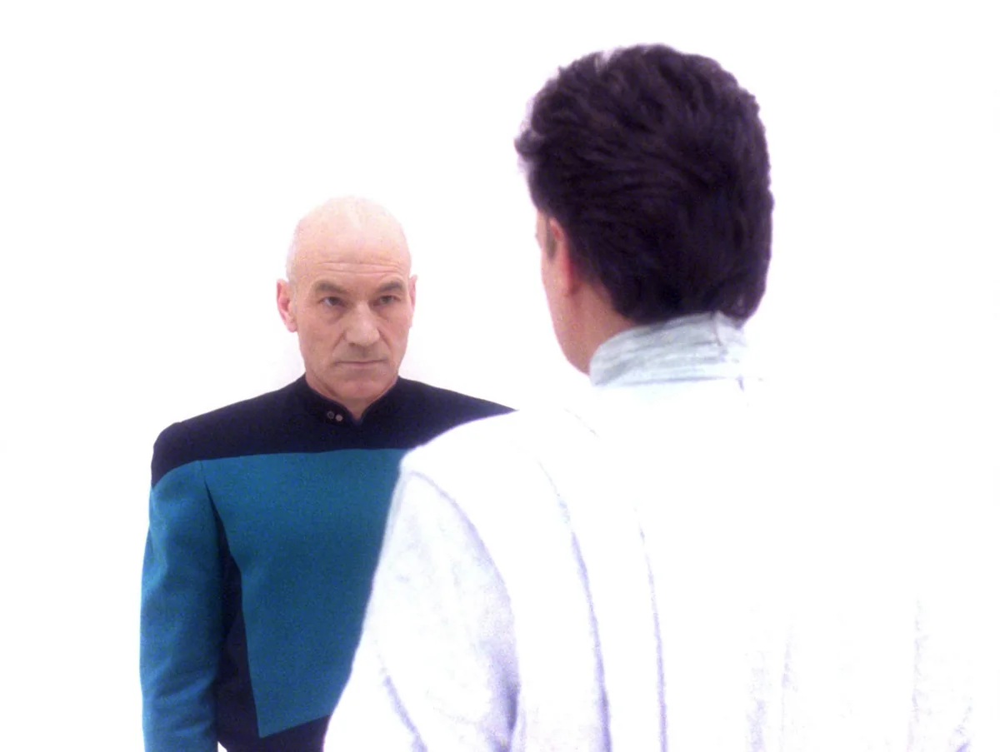
Back in season two, in "Peak Performance", Data loses a game of strategy to a visiting master strategist despite playing it perfectly, and takes himself off duty, convinced he must be malfunctioning. Picard goes to see him:
It is possible to commit no mistakes and still lose. That is not a weakness; that is life.
Edmondson has a category for this as well, the intelligent failure, which is when you fail in new territory on purpose, because trying was the only way to learn.[3]
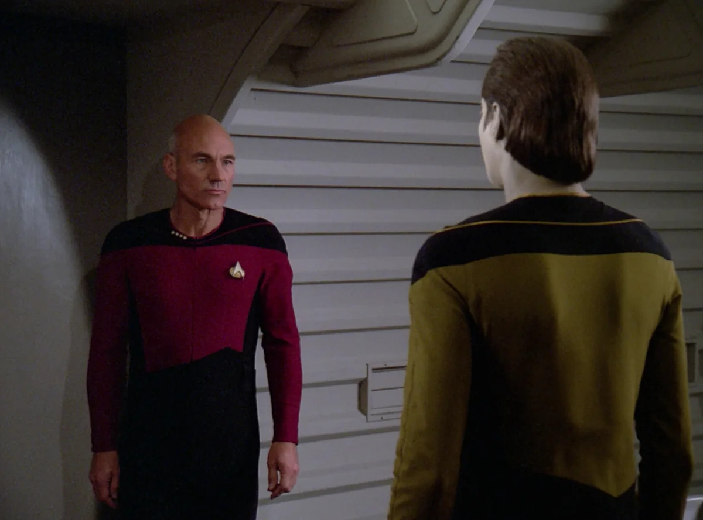
What I take from Picard
- Decide the what and the why, and leave the how and the when to the people doing the work.
- Deliberate with others, and make a culture where disagreeing is both encouraged and expected.
- Be loud and proud about changing your mind.
- Pick the style for the situation: Jellico in a crisis, Picard the rest of the time.
- Tolerance only goes so far, otherwise bad habits fall under "approved" habits.
- Own your failures and be seen to.
- Don't fight orders regularly, so that when you do it's when it matters most.
Greenleaf's test for servant leadership is whether the people around the leader grow.[7] Wesley, Data, Worf, Geordi and Riker all leave the Enterprise bigger than they arrived. Character growth is a defining trait of the show, along with exploration of philosophies meeting scenarios and reality.
Common questions
What are the 3 main things Picard teaches about leadership?
Say what you want and why, and leave the how to the people closest to the problem ("make it so"). Ask the room before you decide, and make disagreeing with you cost nothing. And guard the standard in what you do, because the crew copies that far more than anything you say.
How did Sir Patrick Stewart die?
He died at his home in Los Angeles on 28 October 2026, aged 86. His spokesperson, Kelly Bush Novak, said it followed "a brief and poignant journey" with Alzheimer's disease and Lewy body dementia.
Why did you consider Picard a role model?
Because he was a good leader by being a good person: compassion, consideration, and taking the time to consider before he acts. He does the right thing in the harshest of situations even when it costs him, he puts his crew and his ethics first, and the show lets him be wrong, so I got to watch him fall into traps and learn from them.
References
- Bungay, S. (2011). The Art of Action: How Leaders Close the Gaps between Plans, Actions and Results. Nicholas Brealey. The three gaps (knowledge, alignment, effects) and mission command as the response to them.
- US Army (2019). ADP 6-0: Mission Command: Command and Control of Army Forces. Department of the Army. Commander's intent, disciplined initiative, and mutual trust as the principles.
- Edmondson, A. (1999). Psychological safety and learning behavior in work teams. Administrative Science Quarterly, 44(2), 350–383. The hospital study is Edmondson, A. C. (1996). Learning from mistakes is easier said than done: Group and organizational influences on the detection and correction of human error. Journal of Applied Behavioral Science, 32(1), 5–28. See also Edmondson, A. (2011). Strategies for learning from failure. Harvard Business Review, 89(4), 48–55, for the intelligent-failure typology.
- Goleman, D. (2000). Leadership that gets results. Harvard Business Review, 78(2), 78–90. Six styles, measured against team climate across 3,871 executives.
- Hersey, P., & Blanchard, K. H. (1969). Life cycle theory of leadership. Training & Development Journal, 23(5), 26–34. The origin of situational leadership.
- Brown, M. E., Treviño, L. K., & Harrison, D. A. (2005). Ethical leadership: A social learning perspective for construct development and testing. Organizational Behavior and Human Decision Processes, 97(2), 117–134.
- Greenleaf, R. K. (1970). The Servant as Leader. The Robert K. Greenleaf Center. The "best test" of servant leadership: do those served grow as persons?
- Episodes referenced, all Star Trek: The Next Generation unless noted: "The Measure of a Man" (S2E9, 1989); "Peak Performance" (S2E21, 1989); "The Offspring" (S3E16, 1990); "The Best of Both Worlds" (S3E26/S4E1, 1990); "Family" (S4E2, 1990); "The Drumhead" (S4E21, 1991); "Ensign Ro" (S5E3, 1991); "The First Duty" (S5E19, 1992); "I, Borg" (S5E23, 1992); "The Inner Light" (S5E25, 1992); "Chain of Command" (S6E10–11, 1992); "Tapestry" (S6E15, 1993); "Lower Decks" (S7E15, 1994); "Preemptive Strike" (S7E24, 1994); Star Trek: First Contact (1996); Star Trek: Picard, season 1 (2020).